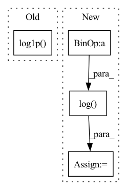

Pattern ID :40239

Before Change
positive_label_mask = targets == 1.0
cross_entropy = F.binary_cross_entropy_with_logits(logits, targets.to(logits.dtype), reduction="none")
neg_logits = -1.0 * logits
modulator = torch.exp(gamma * targets * neg_logits - gamma * torch.log1p(torch.exp(neg_logits)))
loss = modulator * cross_entropy
weighted_loss = torch.where(positive_label_mask, alpha * loss, (1.0 - alpha) * loss)
weighted_loss /= normalizer
After Change
torch.eq(targets, 1.), 1. - outputs, outputs)
focal_weight = alpha_factor * torch.pow(focal_weight, gamma)
bce = -(targets * torch.log(outputs)
+ (1.0 - targets) * torch.log(1.0 - outputs))
loss = focal_weight * bce
loss = torch.where(torch.ne(targets, -1.0), loss,
In pattern: SUPERPATTERN
Frequency: 3
Non-data size: 4
Instances
Fragment ID: 114212254
Project Name: sevakon/efficientdet
Commit Name: cc2e5246bcb32e8fd405e64eec12b70088f1f097
Time: 2020-05-25
Author: sevakonyakhin@gmail.com
File Name: utils/tools.py
M Class Name: AnonimousClass
N Class Name: AnonimousClass
M Method Name: focal_loss(5)
N Method Name: focal_loss(5)
M Parent Class:
N Parent Class:
M File Name: utils/tools.py
N File Name: utils/tools.py
M Start Line: 80
M End Line: 87
N Start Line: 74
N End Line: 91
'>
Before Change
mel = self.transform(signal)
//mel = self.amplitude_to_db(mel)
mel = torch.log1p(mel)
if self.normalized:
mel = self.norm(mel)
return mel
After Change
//mel = self.amplitude_to_db(mel)
//mel = torch.log1p(mel)
log_offset = 1e-6
mel = torch.log(mel+log_offset)
if self.normalized:
mel = self.norm(mel)
return mel
'>
Fragment ID: 114212260
Project Name: qute012/kosr
Commit Name: aa1b8ce040f586fd3b6623488a4dac648e7b856e
Time: 2021-02-17
Author: ejrwls012@gmail.com
File Name: kosr/data/features.py
M Class Name: MelSpectrogram
N Class Name: MelSpectrogram
M Method Name: __call__(2)
N Method Name: __call__(2)
M Parent Class: object
N Parent Class: object
M File Name: kosr/data/features.py
N File Name: kosr/data/features.py
M Start Line: 57
M End Line: 57
N Start Line: 58
N End Line: 59
'>
Before Change
def wave_unnorm(x: Tensor, bits: int = 24, peak: float = 0.5) -> Tensor:
x = (x / peak).clip(-1, 1)
mu = 2 ** bits
x = torch.sign(x) * (torch.exp(torch.abs(x) * math.log1p(mu)) - 1) / mu
return x
After Change
def wave_unnorm(x: Tensor, peak: float = 0.5, alpha: float = 20.0) -> Tensor:
x = x / peak
x = x.clip(-1, 1)
x = (1.0 / alpha) * torch.log(x / (1 - x))
x = x.clip(-1, 1)
return x
'>
Fragment ID: 114212258
Project Name: archinetai/audio-diffusion-pytorch
Commit Name: 13cddd61f9e7b02538ac25e8ee892755339ad1eb
Time: 2022-10-05
Author: flavio.schneider.97@gmail.com
File Name: audio_diffusion_pytorch/utils.py
M Class Name: AnonimousClass
N Class Name: AnonimousClass
M Method Name: wave_unnorm(3)
N Method Name: wave_unnorm(3)
M Parent Class:
N Parent Class:
M File Name: audio_diffusion_pytorch/utils.py
N File Name: audio_diffusion_pytorch/utils.py
M Start Line: 95
M End Line: 98
N Start Line: 95
N End Line: 99